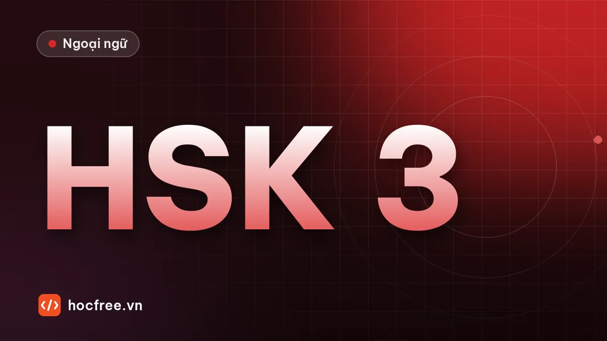

Dự án cuối khóa HSK 3: thi thử đầy đủ và kế hoạch học tiếp
Thi thử đầy đủ với đề mẫu chính thức, so sánh với đầu vào, tự đánh giá 4 kỹ năng theo thang và lập kế hoạch duy trì hoặc học tiếp HSK 4.

Học xong bài này, bạn sẽ
- Thi thử đầy đủ đúng điều kiện thật
- So sánh với đầu vào để thấy tiến bộ
- Lập kế hoạch duy trì và học tiếp
Nên học trước: Chữa đề, phân tích lỗi và kế hoạch 2 tuần cuối
Nội dung bài viết
Bạn đã đi hết 24 tuần: từ những âm tiết pinyin đầu tiên đến câu 把, câu 被, đoạn văn và bài nói 2 phút. Dự án cuối khóa có ba nhiệm vụ: thi thử đầy đủ bằng đề mẫu chính thức, nhìn lại tiến bộ so với điểm xuất phát, và lập kế hoạch cho giai đoạn sau HSK 3, dù bạn thi đạt hay chưa.
Nhiệm vụ 1: thi thử đầy đủ (khoảng 2 giờ)
- Dùng đề mẫu chính thức cấp 3 theo chuẩn HSK 3.0 (tải trên trang của đơn vị tổ chức thi) hoặc đề trong giáo trình luyện thi chuẩn mới phát hành hợp pháp. Không dùng đề HSK 3 bản cũ (80 câu) cho bài này, vì định dạng đã khác.
- Làm đúng điều kiện thật: một mạch nghe – đọc – viết, bấm giờ theo đề, không tra cứu. Nếu thi trên máy, gõ phần viết bằng bộ gõ pinyin.
- Phần nói: làm theo đề mẫu, ghi âm toàn bộ.
- Chấm theo đáp án của đề; phần viết câu và phần nói tự chấm bằng thang đã học, hoặc nhờ giáo viên.
| Phần | Kết quả | So với đề thi thử tự soạn |
|---|---|---|
| Nghe | __ / 30 | tăng / giảm |
| Đọc | __ / 30 | tăng / giảm |
| Viết | __ / 10 | tăng / giảm |
| Nói | __ / 10 (tự chấm) | tăng / giảm |
Đối chiếu với điểm đạt chính thức mà điểm thi công bố cho kỳ thi bạn đăng ký. Nếu chưa có thông tin, hãy đặt mục tiêu an toàn: mỗi phần từ 70% trở lên trong hai lần thi thử liên tiếp.
Nhiệm vụ 2: nhìn lại hành trình
Mở thư mục ghi âm và bài viết bạn đã lưu. Nghe lần lượt:
| Mốc | Bài | Điều cần nghe |
|---|---|---|
| Tuần 2 | Luyện pinyin | Thanh điệu, âm zh/ch/sh, ü |
| Tuần 5 | Kiểm tra sơ cấp | Câu ngắn, ngắt quãng |
| Tuần 9 | Kiểm tra HSK 1 | Giới thiệu bản thân 1 phút |
| Tuần 16 | Kiểm tra HSK 2 | Miêu tả tranh, trả lời câu hỏi |
| Tuần 22 | Một ngày của tôi | Nói 2 phút liên tục, câu phức |
| Tuần 24 | Bài nói hôm nay | So với tất cả các mốc trên |
Viết 5 dòng nhận xét: điều tiến bộ nhiều nhất, điều còn yếu nhất, thói quen giúp bạn nhất, thói quen bạn bỏ dở, một điều bạn muốn nói với chính mình ở tuần 1.
Nhiệm vụ 3: kế hoạch sau HSK 3
Nếu thi thử chưa đạt
- Đừng đăng ký đợt thi quá gần. Thêm 4–6 tuần, tập trung vào hai mã lỗi nhiều nhất trong sổ lỗi.
- Mỗi tuần làm một đề mẫu, chữa 4 lớp; dừng khi hai đề liên tiếp đạt mục tiêu.
- Kiểm tra từ vựng: so danh sách từ HSK 3.0 với bộ thẻ Anki, học bù các từ còn thiếu.
Nếu đã sẵn sàng
- Đăng ký thi (xem bài đăng ký thi), theo lịch 14 ngày ở bài chữa đề.
- Sau khi thi, đừng dừng hẳn. Ngôn ngữ không dùng sẽ mất rất nhanh.
Duy trì (30 phút mỗi ngày)
- 10 phút Anki (không thêm từ mới quá 5 thẻ/ngày).
- 10 phút nghe: hội thoại, video có phụ đề chữ Hán về chủ đề công việc của bạn.
- 10 phút dùng thật: nhắn tin với đồng nghiệp người Trung, viết nhật ký 3 câu, đọc một tin ngắn.
Học tiếp HSK 4
HSK 4 là trình độ trung cấp, từ vựng và ngữ pháp tăng đáng kể, bài đọc dài hơn và có nhiều văn viết hơn. Khi chuyển lên, giữ nguyên phương pháp đã giúp bạn đi hết 24 tuần: lịch học cố định, Anki có audio, sổ lỗi, ghi âm, kiểm tra định kỳ.
Tự đánh giá năng lực sau 24 tuần
| Tôi có thể… | Chưa | Tạm được | Tốt |
|---|---|---|---|
| Giới thiệu bản thân, gia đình, công việc trong 2 phút | ☐ | ☐ | ☐ |
| Mua sắm, gọi món, hỏi đường, đi taxi | ☐ | ☐ | ☐ |
| Gọi điện hẹn gặp, đổi lịch, để lại lời nhắn | ☐ | ☐ | ☐ |
| Kể việc đã làm, đã từng làm, sắp làm | ☐ | ☐ | ☐ |
| Báo cáo tiến độ, giải thích vấn đề đơn giản ở nơi làm việc | ☐ | ☐ | ☐ |
| Đọc hiểu đoạn văn 150 chữ không có pinyin | ☐ | ☐ | ☐ |
| Viết đoạn văn 100 chữ ít lỗi | ☐ | ☐ | ☐ |
| Nghe hiểu hội thoại tốc độ vừa về chủ đề quen thuộc | ☐ | ☐ | ☐ |
Ô "Chưa" và "Tạm được" chính là danh sách việc cần làm của bạn trong tháng tới.
Lời kết
HSK 3 không phải đích đến cuối cùng, mà là điểm bạn bắt đầu dùng tiếng Trung thay vì chỉ học nó. Hãy tìm cơ hội nói mỗi ngày, dù chỉ một câu chào đồng nghiệp, một tin nhắn cảm ơn đối tác. Chúc bạn thi tốt và giữ được nhịp học đã xây dựng suốt 24 tuần.
Tài liệu đi kèm: bộ giáo trình HF-HSK3 và bài tổng quan lộ trình HSK3.
Bài tập thực hành
- Làm một đề mẫu chính thức đầy đủ các phần, đúng giờ, rồi chấm.
- Nghe lại bản ghi âm tuần 1 và bản ghi âm hôm nay, viết 5 dòng nhận xét tiến bộ.
Làm xong bài tập mới chuyển sang bài tiếp theo: đọc to, tự viết chữ Hán và tự chấm đáp án là cách duy nhất để nhớ lâu.